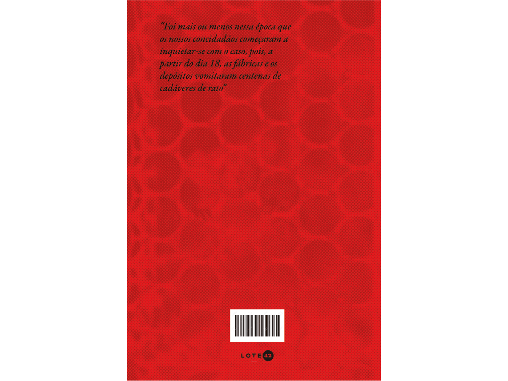
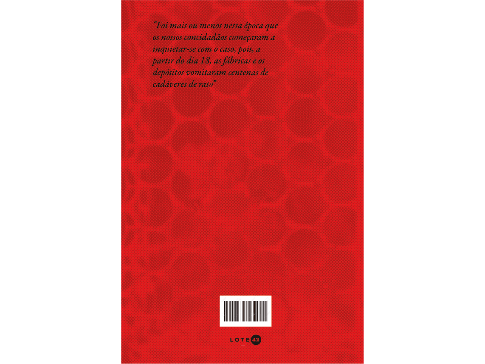

a peste // livro
"A Peste" de 1947 é uma obra de resistência. É narrado a partir do ponto de vista de um médico residente da cidade de Orã, na Argélia. Após ser atingida por uma terrível peste transmitida por ratos, tem sua população dizimada, lembrando da ocupação nazista na França durante a Segunda Guerra. É um livro de grande dimensão política e ressalta a solidariedade, a solidão e a morte, entre outros dilemas que assolam o homem moderno. Trazendo esse gancho para o projeto, foi pensado em buscar alguma ligação com elementos modernistas, logo, dialogando então com a tecnologia, presente na vida de toda a população nos dias atuais.
referências
estudos
A tecnologia envolve e desenvolve vertentes em todos os campos possíveis da nossa vida em sociedade. Uma ferramenta de muita controvérsia e citada por diversos artistas, pensadores contemporâneos e cidadãos médios é a arte generativa, que, por alguns, traz a insegurança ética por envolver uma inteligência artificial de rápido desenvolvimento e, de certa forma, propagação em níveis extraordinários. Pensando em como a doença é transmitida em "A Peste", a utilização dessa ferramenta se fez um elemento chave para o projeto como um todo.
páginas // projeto final
Como conceito criativo, o livro em sua forma física foi pensado em tamanho médio e capa dura, buscando explorar junto à arte generativa conceitos envolvendo a solidão e o distanciamento social, utilizando cores como o vermelho, amarelo, preto e branco. A escolha fictícia da editora Lote 42 foi essencial para o desenvolvimento da identidade, pois ao traçar um paralelo entre os livros já publicados e as ideias previamente desenvolvidas para o projeto, o resultado final nasceu de forma natural e incorporou de forma mais fácil os conceitos trazidos em cada etapa.
 
